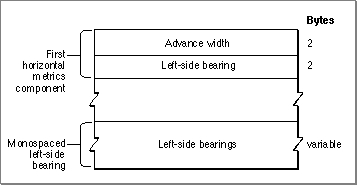

The Horizontal Metrics Table
The horizontal metrics table, with a tag name of'hmtx', consists of arrays that contain metrics information--the advance widths and left-side bearings--for the horizontal layout of each glyph in the font. The horizontal metrics table structure is shown in
Figure 4-20.Figure 4-20 The horizontal metrics table

The first component of the horizontal metrics table contains two values for each entry: the advance width and the left-side bearing for the associated glyph. The number of value pairs in this component is specified in the number of advance widths element of the horizontal header table, which is described in the preceding section, "The Horizontal Header Table."The horizontal metrics table may have a second component that is used for fixed-width glyphs. It contains the left-side bearings only. The advance width is the same as the last entry in the first component of this table.